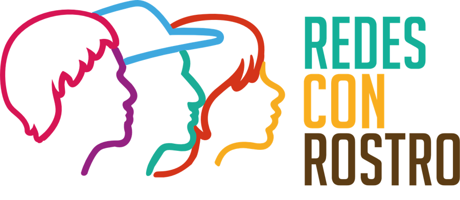

Redes Con Rostro en CERES

Salud mental y cuidado
Vicepresidencia de la República
Redes Con Rostro presente en las Mesas Intersectoriales CERES
4
actividades
3
aliados
41
participantes aprox.
Toca una actividad para ver el detalle
Anterior
Siguiente